#Created by: Ashton VonBergen #Check for existing Windows File Explorer window if(exists(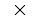)): click() wait(5) #Check for existing Chrome window if(exists(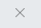)): click() wait(5) #Main body of script if(exists()): #Check for icon, exits script if it does not exist wait(5) doubleClick() wait(10) type(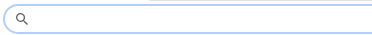, "https://cis.cernerworkswan.com/Citrix/greaseboardWeb/" + Key.ENTER) wait(5) type(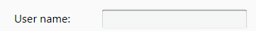, "tbclsdcsdcgb2") wait(1) type(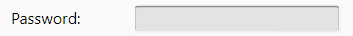, "M0ntana2") wait(1) click(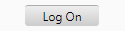) wait(10) click(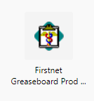) #Select Firstnet Greaseboard application wait(30) if(exists(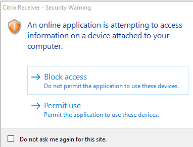)): #Check for Permissions Dialog Box, exits statment if it does not exist click(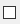) click(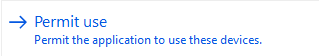) wait(10) click() #Closes Chrome window in case Firstnet board times out wait(5) click(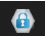) #Select Cerner Citrix login from taskbar wait(3) type(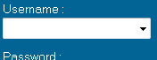, "tbclsdcsdcgb2") wait(1) type(, "Tr@ck1ngB0@rd") wait(1) click() wait(15) click(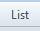) wait(1) type("b") wait(1)